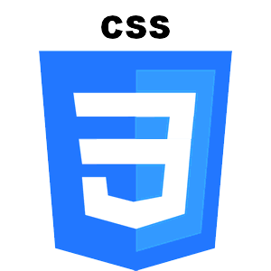

Habilidades
HTML
HTML, siglas en inglés de HyperText Markup Language (‘lenguaje de marcado de hipertexto’),
hace referencia al lenguaje de marcado para la elaboración de páginas web. Es un estándar que
sirve de referencia del software que conecta con la elaboración de páginas web en sus
diferentes versiones, define una estructura básica y un código (denominado código HTML)
para la definición de contenido de una página web, como texto, imágenes, videos, juegos,
entre otros.Es el estándar que se ha impuesto en la visualización de páginas web y es el que todos los }
navegadores actuales han adoptado.

CSS
Las hojas de estilo en cascada (CSS, cascading style sheets) permiten crear páginas web atractivas. Pero ¿cómo funcionan realmente? En este artículo explicaremos qué es el CSS con un ejemplo de sintaxis sencillo y describiremos algunos términos clave sobre este lenguaje.¿Para qué sirve el CSS?
Como hemos mencionado, el CSS es un lenguaje informático que especifica cómo se presentan los documentos a los usuarios: cómo se diseñan, compaginan, etc.
Un documento suele ser un archivo de texto estructurado con un lenguaje de marcado: HTML es el más común, pero también existen otros como SVG o XML.
MySQL
MySQL es el sistema de gestión de bases de datos relacional más extendido en la actualidad al estar basada en código abierto. Desarrollado originalmente por MySQL AB, fue adquirida por Sun MicroSystems en 2008 y esta su vez comprada por Oracle Corporation en 2010, la cual ya era dueña de un motor propio InnoDB para MySQL.
MySQL es un sistema de gestión de bases de datos que cuenta con una doble licencia. Por una parte es de código abierto, pero por otra, cuenta con una versión comercial gestionada por la compañía Oracle.
GitHub
Github es un portal creado para alojar el código de las aplicaciones de cualquier desarrollador, y que fue comprada por Microsoft en junio del 2018. La plataforma está creada para que los desarrolladores suban el código de sus aplicaciones y herramientas, y que como usuario no sólo puedas descargarte la aplicación, sino también entrar a su perfil para leer sobre ella o colaborar con su desarrollo.